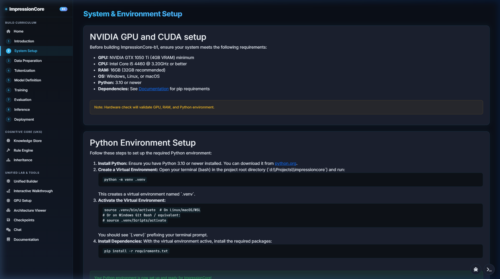

Current documentation — November 2, 2026
Start with the verified repair addendum, local startup guide, and remaining priorities. Local authentication, real chat, fresh Kinect capture, optional speech readiness and native experiment provenance have advanced; quality, offering certification, peak-memory and production gates remain open. Historical screenshots, forecasts, static telemetry and achievement claims below are not live status or production certification.
Builder 5000 is separate from runtime 8000/React 5173. Browser hardware/model access is blocked by authentication/CORS error handling, not proven hardware absence. Native Builder remains bounded text-only research; require authenticated browser tests, truthful real/mock readiness, native identity/provenance, scientific/Kinect/held-out-quality/4GB-memory evidence, and passing lint before production claims.
Documentation Hub & IDS Semantic Explorer
Instant client-side semantic search across over 1,600 indexed documentation files, architectural contracts, PyTorch implementation guides, and hardware telemetry records.
5-Minute Rapid Setup Guide
Get the entire ImpressionCore Model Builder and Runtime running locally on Windows, Linux, or macOS in 5 simple commands.
1. Clone & Setup Virtual Environment
Requires Python 3.10+ and CUDA 12.1+ (optional for GPU acceleration):
git clone https://github.com/kirklasalle/impressioncore.git cd impressioncore python -m venv .venv .venv\Scripts\activate # Windows # source .venv/bin/activate # Linux / macOS pip install -r requirements.txt
2. Launch System A & System B
Launch the Model Builder on Port 5000 and Runtime on Port 8000:
# Launch Unified Model Builder (Port 5000) launch_builder.bat # Launch ImpressionCore Runtime (Port 8000 / 5173) launch_impressioncore.bat

Automated Verification & CI/CD Testing
ImpressionCore includes a comprehensive automated builder verification script testing all 9 builder site functions, preflights, and real model runs.
# Run the full automated Builder verification suite: python src/dev_tools/exercise_builder_site.py # Run PyTest unit tests across core modules: pytest tests/ -v
✅ Preflight Checks
Automated CUDA driver checks, device memory queries, and PyTorch 2.6+ bypass validation.
✅ Model Contract Audits
Forward pass verification for B1 39M, B2 50M, and B3 504M architectures with zero NaN gradients.
✅ Non-Repudiation Logs
Automated SHA-256 checkpoint hashing ensuring exact mathematical reproducibility.